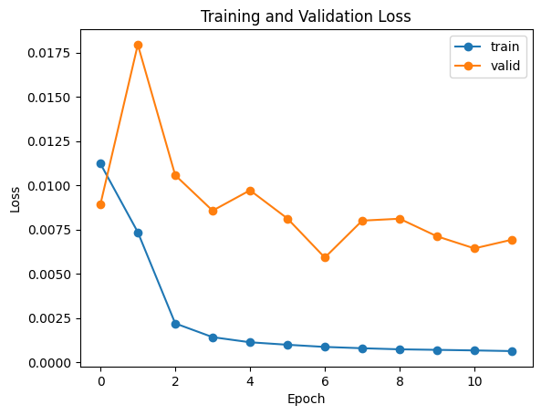

Final Project 5
Overview
This Final Project is divided into two separate projects. I chose to do the Facial Keypoint Detection with Neural Nets project and the High Dynamic Range Imaging Project.
Facial Keypoint Detection with Neural Nets
Overview
In this project, we seek to predict where a set of facial keypoints are on pictures of people's faces using Neural Networks, particularly Convolutional Neural Networks.
Part 1: Nosetip Detection
Approach
The first part of this section is making the custom dataset of the images and the labels. Using the provided starter code, read in all of the images and the corresponding labels. The images are transformed in the following way:
- Greyscale the image.
- Normalize the image such that pixel values are within the range [-0.5,0.5].
- Resize the image to be of size (60,80). (width,height)
After this data augmentation and after a lot of testing with different parameters, I built the CNN which has the following layers:
- Conv2d: in_channel: 1, out_channel: 12, kernel_size: 3
- MaxPool: kernel_size: 2, stride: 2
- Conv2d: in_channel: 12, out_channel: 16, kernel_size: 3
- MaxPool: kernel_size: 2, stride: 2
- Conv2d: in_channel: 16, out_channel: 16, kernel_size: 5
- MaxPool: kernel_size: 2, stride: 2
- Flatten
- FCL: in_size: 448, out_size: 200
- FCL: in_size: 200, out_size: 2
Note that after every convolutional and linear layer, there is a ReLU non-linear activation, with the exception of the last linear layer. I trained the CNN with a learning rate of \( 10^{-3} \) using Adam's optimization, MSE loss, and with 29 epochs.
Results
Some samples from the dataset with the nosetip point.
The Loss curves
Some well classified points from the validation set.
Some poorly classified points from the validation set.
Comparing Good vs Bad samples
It seems that the model learns to classify a certain set of pictures well, namely, ones where the subject is a male looking straight on or slightly to the side. It does poorly on female subjects, when the person is looking too much to the side, or when there is something different about the picture like arms/hands or different facial expression. (Note, there are only 7 females in this dataset of 40 people.)
Part 2: All keypoints Detection
Approach
The first part of this section is making the custom dataset of the images and the labels. Using the provided starter code again, read in all of the images and the corresponding labels. The images are transformed in the following way:
- Greyscale the image.
- Resize the image to be of size (240,180). (width,height)
- A random Affine transformation: 15 degree rotation and 5% horizontal/vertical translation.
- A random color jitter transformation: 5% brightness and 10% contrast
- Normalize the image such that pixel values are within the range [-0.5,0.5].
The labels must also be subject to the affine transformation. This can be implemented with a custom torchvision transformation that implements the rotation first and then the translation. Make sure to reseed torch.manual_seed inside of the custom dataset's __getitem__ method. This is important because, if done correctly, the same random transformation will be applied to both the image and the labels.
After this data augmentation and after a lot of testing with different parameters, I built the CNN which has the following layers:
- Conv2d: in_channel: 1, out_channel: 8, kernel_size: 7
- MaxPool: kernel_size: 2, stride: 2
- Conv2d: in_channel: 8, out_channel: 14, kernel_size: 5
- MaxPool: kernel_size: 2, stride: 2
- Conv2d: in_channel: 14, out_channel: 20, kernel_size: 3
- MaxPool: kernel_size: 2, stride: 2
- Conv2d: in_channel: 20, out_channel: 26, kernel_size: 5
- MaxPool: kernel_size: 2, stride: 2
- Conv2d: in_channel: 26, out_channel: 32, kernel_size: 3
- Flatten
- FCL: in_size: 1440, out_size: 512
- FCL: in_size: 512, out_size: 256
- FCL: in_size: 256, out_size: 116
Note that after every convolutional and linear layer, there is a ReLU non-linear activation, with the exception of the last linear layer. I trained the CNN with a learning rate of \( 10^{-3} \) using Adam's optimization, MSE loss, and with 50 epochs.
Results
Some samples from the dataset with the nosetip point.
The Loss curves
Some learned Convolution Kernels
Some well classified points from the validation set.
Some poorly classified points from the validation set.
Comparing Good vs Bad samples
It seems that the model learns to classify a certain set of pictures well, namely, ones where the subject is a male looking straight on or slightly to the side. It does poorly on female subjects, when the person is looking too much to the side, or when there is something different about the picture like arms/hands or different facial expression. (Note, there are only 7 females in this dataset of 40 people.)
Part 3: Larger Dataset
Approach
The first part of this section is making the custom dataset of the images and the labels. This is a different datset which is much larger (6666 images) and which has a different structure. The keypoints are stored as pixel coordinates within the bounding box defined for the face in the image. Therefore, to get the pixel ratios, use the information encoded inside the bounding box. Using the provided starter code again, read in all of the images, the bounding boxes and the corresponding keypoints/labels. The images are transformed in the following way:
- Crop the image using PIL.crop() and the information inside the bounding boxes.
- Greyscale the image.
- Resize the image to be of size (224,224). (width,height)
- A random Affine transformation: 15 degree rotation and 5% horizontal/vertical translation.
- A random color jitter transformation: 5% brightness and 10% contrast
- Normalize the image such that pixel values are within the range [-0.5,0.5].
Modify the previous part's custom keypoint transform such that it first calculates the ratios of the keypoints' coordinates. Then, proceed in the same manner.
After this data augmentation, we use PyTorch's built-in ResNET18 architecture to build our model. It is necessary to reset the first layer (a conv2d layer) so that it accepts input images with 1 channel and the last layer (a linear layer) so that it returns 136 outputs (68 pairs of (x,y) coordinates). I trained the ResNET18 with a learning rate of \( 10^{-3} \) using Adam's optimization, MSE loss, and with 12 epochs.
Results
Some samples from the dataset with the nosetip point.
The Loss curves

Some well classified points from the validation set.
Some poorly classified points from the validation set.
Three pictures of myself which the model tries to classify. Unfortunately, it doesn't do quite a good job, most likely because of the glasses (not many people in the training data with glasses).
Some images from the test set.
Analysis
Based on the loss graphs and some of the results, training with 12 epochs was not enough to get a good enough model even when using the pre-trained version of ResNET18. As before, the model has issues when the face is not completely visible or there are other things in the image that might “distract" from the main focus or are not very common in the training dataset.
Part 4: Larger Dataset with HeatMaps
Approach
This part uses the exact same data as the previous one. However, instead of training on the keypoints, we will train the model on heatmaps modelled by 2D Gaussians which essentially represent a probability distribution for the location of a keypoint. I am using \(\sigma = 5.0\) to generate the kernels. This is achieved by simply making Gaussian kernels centered at the 68 keypoints and changing the custom dataset such that it calculates the heatmaps for the keypoints and returns the heatmaps as the labels.
Moreover, for this part, we use PyTorch's Segmentation FCN (fully-convolutional netowrk) ResNET50 found here to make our predictions. This is because its output images are of the same dimensions as the inputs (the heatmaps). Also, I could not load in Pytorch's UNet into Colab as it caused an out of RAM error. We specify that the number of in channels is 1 (greyscale) and 68 out channels with 50176 features (224 times 224). Consequently, the training parameters also change: learning rate is \(5 \times 10^{-4} \) with Adams optimization using Cross Entropy Loss. Besides these modifications, this part is very similar to the previous one.
Results
The Loss curves
Some well classified points from the test set.
Some poorly classified points from the test set.
Comparing Good vs Bad samples
High Dynamic Range Imaging
Overview
Cameras are unable to capture the whole range of light in real-world scenes. Even the best photographs are partially under or over-exposed. So, in this project, we seek to capture the full dynamic range of commonly encountered real-world scenes by using multiple images of the same scene with different exposures.
Part 1: Getting the Radiance Mapping
Approach
There are two main formulas which capture the relaitonship between the radiance and the pixel value in the photo. \( Z_{ij} = f(E_i \Delta t_j) \) where \(Z_{ij}\) is the pixel value between 0 and 255 for pixel i in image j, \(E_i\) is the radiance for pixel i (note that the radiance is the same across the different images), and \(\Delta t_j\) is the exposure duration for image j (which is the same for all the pixels in the same image). The goal is to determine \(E_i\) from the known \(Z_{ij}\) and \(\Delta t_j\). However, the function relating these variables is also unknown. The problem is reformulated as \( \ln E_i = g(Z_{ij}) - \ln \Delta t_j \) where \(g = \ln f^{-1} \) is the unknown function but is assumed to be smooth and monotonic. This naturally leads to a Least-Squares formulation in an attempt to estimate \(\ln E_i\) but also to recover the function \(g\) with a subsample of the image points:
\[ O = \sum_{i=1}^N \sum_{j=1}^P \{ w(Z_{ij})[g(Z_{ij}) - \ln E_i - \ln \Delta t_j] \}^2 + \lambda \sum_{z=Z_{min}+1}^{Z_{Max}-1} [w(z)g"(z)]^2 \]
Thus, solving this optimization problem leads to finding \(g(z)\). In practice, we only care about \(g(z)\) because we are going to use that to solve for the \(\ln E_i\) for all of the pixels and not just the subsample. Thus, to recover the radiances for each color channel while incorporating the weights, use the formula:
\[ \ln E_i = \frac{\sum_{j=1}^P w(Z_{ij})(g(Z_{ij}) - \Delta t_j)}{\sum_{j=1}^P w(Z_{ij})} \]
Then combine all the three channels together. This leads to the HDR Map as seen below.
Here is the original paper which discusses this entire setup. And here is the project specification from Brown.
Results
This is an example of the input images.
This is an example of the g curves
These are the radiance maps for the Arch pictures.
| Mean of Channels |
Per Channel |
| |
|
Part 2: Radiance Map to Image
Approach
Now that we have the radiance maps, we transform them to get back real images with a high-dynamic range. There are different transforms that can achieve this but we focused on three for this project.
- The global scale is essentially a minmax normalizer; substract the minimum along each channel and normalize to get a range from 0 to 1.
- The global simple first performs some transformation on the radiance map and then applies the global scale. The applied transformation can be \(\log(L), \sqrt{L}, L/(L+1)\). In my implementation, I use \(L/(L+1)\).
- Finally, the Durand transformation. The details can be found in the project spec here. Essentially, it extracts the darker and lighter regions of images, applies a bilateral filter, and puts them back together to get a much more dynamic scene.
I present all of the dataset images using the three transformations for comparison.
Results
| Global Scale |
Global Simple |
Durand |
| |
 |
|
| |
|
|
| |
|
|
| |
|
|
| |
|
|
| |
|
|
| |
|
|
| |
|
|